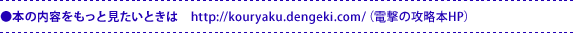

- やりごたえ200％UPの『スーパーマリオギャラクシー2』の冒険をとことんサポート！ パワースターやグリーンスター攻略では、画面写真と図解でくわしく、ていねいに、あなたの目指すスターまで導きます。
そのほか彗星メダル、ハラペココインチコやチコショップの場所などスターコンプリートのための各ギャラクシーの詳細はもちろん、ボス・敵データ、無限1UPワザ、コインやスターピースを9999集める方法も伝授しちゃいます！
この本でとことんギャラクシーを遊びつくしてくださいね。


- マリオやヨッシーの変身アクションをわかりやすく解説したうえで、すべてのシナリオをマップを使って完全攻略！
「彗星メダル」や「グリーンスター」の取りかたのほか、タイムアタック攻略のアドバイスまでバッチリ掲載している！
さらに、星船で起こるイベントや届けられる手紙のこと、ギャラクシーに登場する敵の特徴までまるごとフォローした、究極の1冊だ！
- 最初に、今回のソフトの大きな特徴である、ヨッシーとともにおこなうマリオのアクションテクニック、および各種アイテムなどを紹介。
攻略本編では、7ワールドのすべてのシナリオについて、見やすい3Dマップを掲載しながら上手な進み方を徹底解説。それぞれのシナリオの出現条件もすべて公開。パワースター＆グランドスター122個、およびグリーンスター120個の入手方法も完璧ガイド。
さらに、生態と倒し方がずばりわかる敵キャラクター図鑑も収録。
銀河のスーパースターをめざすための完全攻略本！
- パワースターもグリーンスターもぜーんぶ集めて『スーパーマリオギャラクシー2』を遊び尽くしたい！本書は、そんな人をお手伝いするための1冊です。
各ギャラクシーにあるパワースター、グリーンスター、隠しスターの位置をすべてマップ上に掲載し、取り方もわかりやすく解説しています。もちろんマリオやヨッシーの変身能力や、アクションの解説などもばっちりです。
さらに、パワースターの取得を管理するチェックリストも付いているので、まだ取得していないパワースターたちも一目瞭然です!!